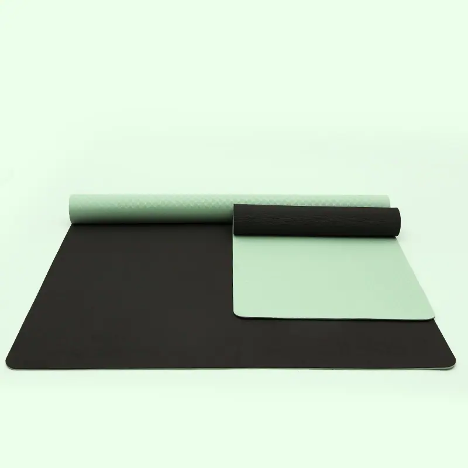
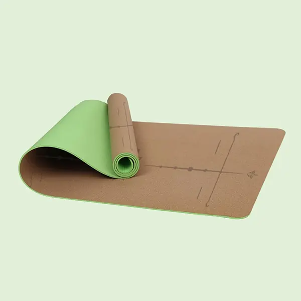
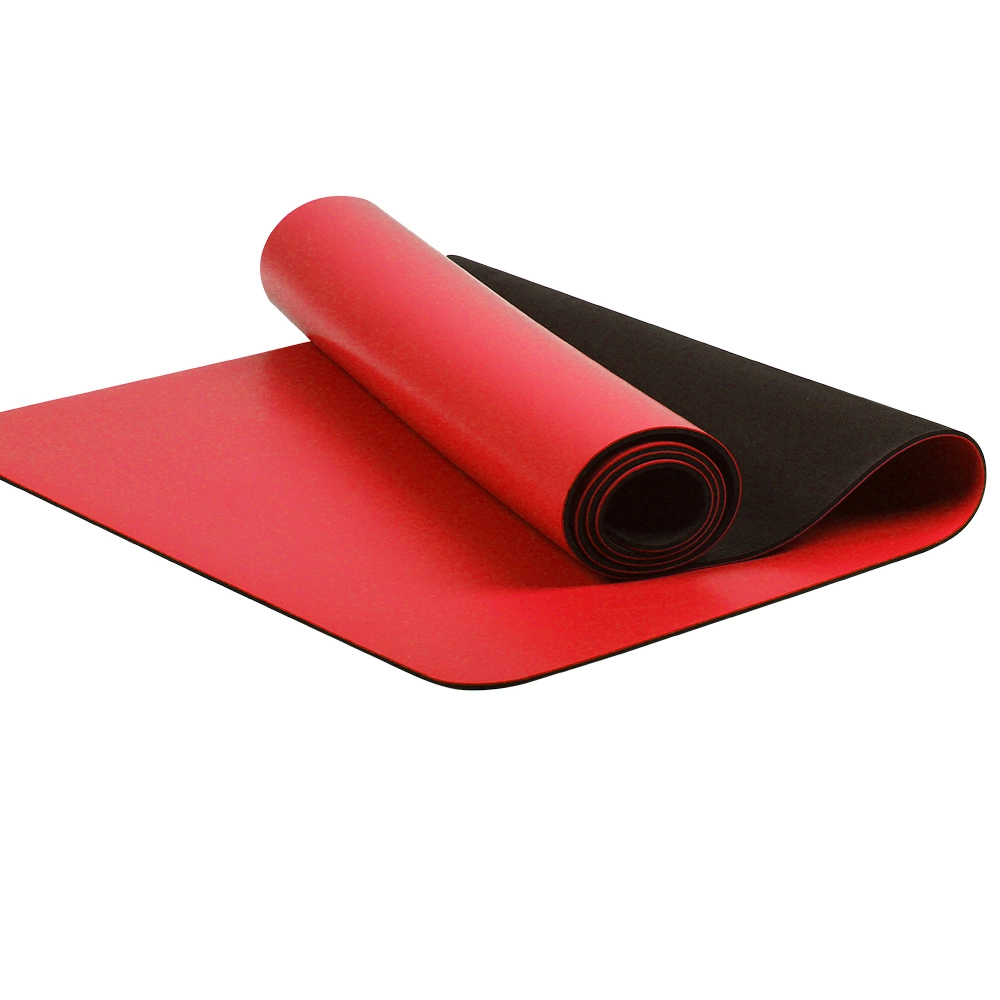
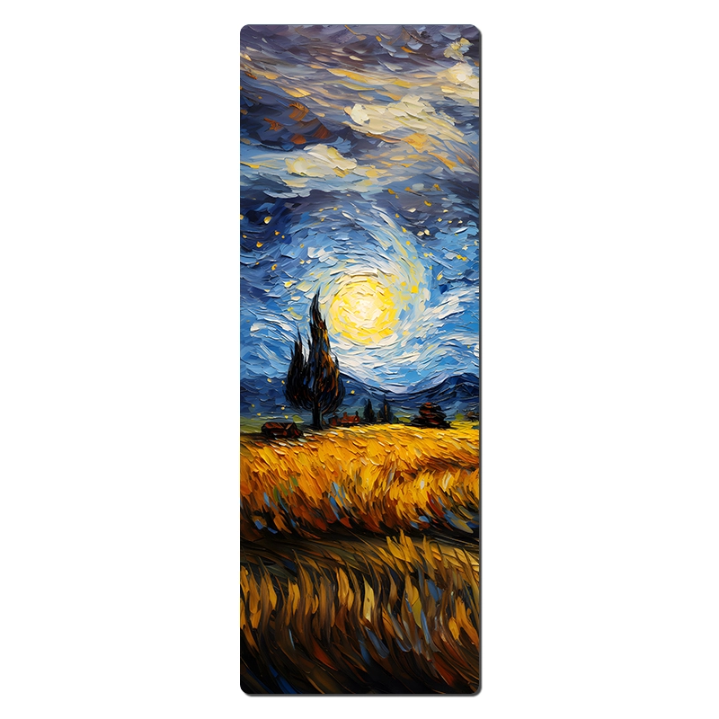
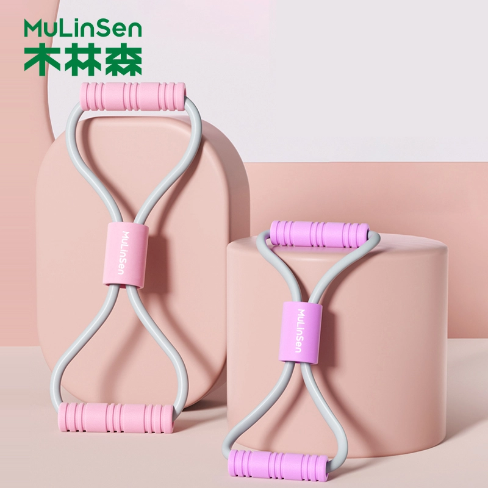
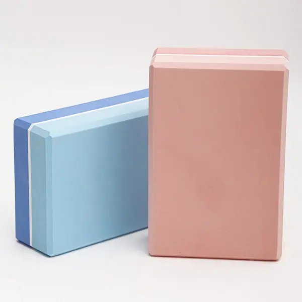

2013년부터 요가 매트(에어리얼 요가 해먹, 요가 소품, 폼롤러, 저항 밴드) 및 피트니스 장비 분야의 선도적인 OEM/ODM 제조업체로 활동해 왔습니다. 600명 이상의 숙련된 근로자를 보유하고 있으며, 월간 200,000개 이상의 요가 매트를 생산할 수 있는 능력을 갖추고 있고, 24시간 운영되는 서비스 팀을 운영하고 있습니다. 최소 주문 수량(MOQ)은 100개부터이며, 7일 샘플 제작으로 문의해 주시기 바랍니다.
자사 브랜드의 성공을 위해 설계된 유연한 공급망.
TPE 매트는 100개부터, 폼롤러 제품은 500개부터, 대부분의 액세서리는 500~1,000개부터 주문 가능합니다. 재고 부담 없이 시장을 테스트해 보세요.
7일 이내에 귀사의 로고, 색상 및 포장 옵션을 반영한 실물 샘플을 제공해 드립니다.
소재, 크기, 두께, 색상, 투톤, 로고, 접힘 방식 및 포장 — 모든 것이 사양에 맞춰 제작됩니다.
ROHS / CE / ISO 9001 / BSCI / REACH 글로벌 시장 규격 준수.
푸젠에 위치한 수직 통합형 제조업체 — 연구개발, 생산, 품질 관리를 한 지붕 아래에서 모두 수행합니다.
| 월간 생산 능력 | |
|---|---|
| 요가 매트 | 월 200,000개 |
| 스포츠 가방 | 월 150,000개 |
| 요가복 | 월 120,000개 |
| 요가 레깅스 | 월 100,000개 |
| 요가 블록 | 월 100,000개 |

요가 필수품부터 종합 피트니스 제품 라인까지 — 모든 제품이 공장 직판이며 맞춤 제작이 가능합니다.

Eco TPE · 단층 및 이중층 · 61–90 cm
23개 상품 보기 →
PU 홈 · 천연 고무 매트 · 핫 요가
18개 상품 보기 →
스웨이드 / 코르크 표면 · 인쇄 가능
14개 상품 보기 →
라운드 · 만다라 · 리포머 매트
9개 상품 보기 →
EVA / EPP · 실심 및 중공 · 진동식
12개 상품 보기 →
파시아 건 · 파시아 볼 · 마사지 도구
14개 상품 보기 →
루프 · 튜브 · 8자형 · 파워 밴드
10개 상품 보기 →
블록 · 공 · 고리 · 가방 · 해먹
23개 상품 보기 →
속도 · 계수 · 무선 · 어린이용
6개 상품 보기 →
실리콘 웨이트 · 복근 롤러 · 보드 · 스테퍼
12개 상품 보기 →당사의 10개 제품 라인에서 엄선한 제품들로, 모든 제품은 고객님의 로고, 크기, 두께 및 포장 방식에 맞춰 맞춤 제작이 가능합니다.

TPE · 185x122cm

Cork+TPE · 183cm*66cm*6mm

PU+고무 · 183x68cm

PU+고무 · 185x68cm

스웨이드+고무 · 185x68cm

스웨이드+고무 · 185x68cm

스웨이드+고무 · 68cm
주문 제작

주문 제작

ABS + 전자 부품 · 14×5.5×15cm

TPE · 42*14cm

주문 제작
아래에 나열된 모든 제품군은 동일한 제조업체에서 생산되었으며, 동일한 색상 체계를 따르고 하나의 구매 주문(PO)으로 처리됩니다. 구매자의 요구 사항에 맞는 제품을 선택해 주시면, 저희가 전체 키트의 사양을 확정해 드리겠습니다.
스튜디오를 새로 열거나 리모델링할 때 — 매트, 블록, 볼스터, 스트랩, 해먹을 한 세트로 묶어, 원하는 색상으로 한꺼번에 배송해 드립니다.
프리 웨이트, 매트, 로프, 밴드, 회복 용품 — 단 하나의 공급업체, 통일된 색상 체계로, 고객사의 브랜드를 적용할 수 있도록 준비되어 있습니다.
로고가 새겨진 소음이 적고 냄새가 거의 나지 않는 매트와 소품 — 객실용 요가 키트와 스파 판매용 제품군.
OEM/ODM을 포함한 전체 카탈로그 — 고객님이 원하는 색상, 로고, 포장, 시즌당 단일 공장 및 단일 발주서.
롤러, 페이시아 건, 볼, 스틱 — 클리닉 및 회복 스튜디오를 위해 주문별로 밀도, 질감, 색상이 지정됩니다.
마켓플레이스 및 DTC 판매자를 위해 제작된, 가볍고 판매량이 많은 SKU로 배송비가 저렴한 제품들 — 로프, 밴드, 공, 블록, 여행용 매트 등.
어떤 소재가 해당 가격대에 맞는지 잘 모르시겠나요? 8가지 소재 모두 비교하기 → · 전체 카탈로그 둘러보기 →
ISO 9001, SGS, BSCI, 1688 Super Factory 및 Made-in-China Audited.

문의부터 배송까지, 네 가지 명확한 단계로 진행됩니다.
제품 사양, 수량 및 목표 시장을 알려주세요.
7일 이내에 견적서와 실물 샘플을 보내드립니다.
주문을 확인한 후, 모든 로트를 생산하고 품질 검사를 실시합니다.
전 세계 배송 및 지속적인 재주문 지원.